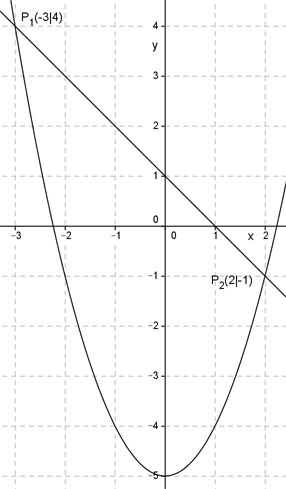
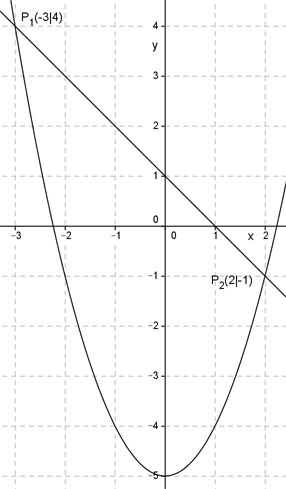

Aufgabe 18
In welchen Punkten schneiden sich die
Parabel y = x2 - 5 und die Gerade y = -x + 1?
Rechnerische Lösung:
Gleichsetzen:
x2 - 5 = -x + 1 |+x
x2 + x - 5 = 1 |-1
x2 + x - 6 = 0
p,q – Formel:
p = -1 ; q = -6
 x1,2 = -0,5 ± 2,5
x1 = -0,5 - 2,5 = -3
y1 = -(-3) + 1 = 4
x2 = -0,5 + 2,5 = 2
y2 = -2 + 1 = -1
P1(-3|4) ; P2(2|-1)
Zeichnerische Lösung:

x1,2 = -0,5 ± 2,5
x1 = -0,5 - 2,5 = -3
y1 = -(-3) + 1 = 4
x2 = -0,5 + 2,5 = 2
y2 = -2 + 1 = -1
P1(-3|4) ; P2(2|-1)
Zeichnerische Lösung:
